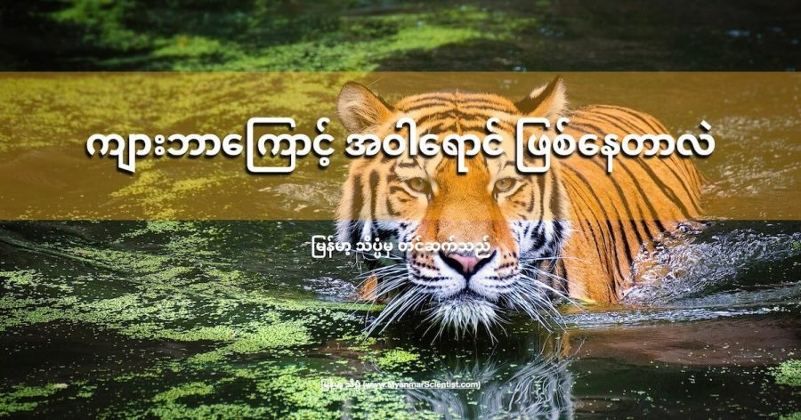

သတ္တဝါ တွေရဲ့ ကိုယ်ခန္ဓာက အရောင် အဆင်းနဲ့ အဆင် တွေဟာ သူ့ဟာသူ ကြုံရာ ကျဘမ်း ဖြစ်လာကြတာ မဟုတ်ပါဘူး။ တိရိစ္ဆာန် တွေရဲ့ ပြင်ပ အရောင်အဆင်း အဆင် သဏ္ဍာန် တွေဟာ ဒီ တိရိစ္ဆာန် တွေအတွက် အကျိုးကျေးဇူး တစ်စုံတစ်ရာ ရရှိဖို့ ဖြစ်လာကြတာ ဖြစ်ပါတယ်။
ဥပမာ ပြရရင် အချို့ တိစ္ဆာန် တွေရဲ့ လှပတဲ့ အရောင်အသွေးဟာ သူတို့ မိတ်လိုက်ချိန်မှာ ဆန့်ကျင်ဖက် တိစ္ဆာန် တွေကို ဆွဲဆောင်နိုင်ဖို့ ဖြစ်ပါတယ်။ အချို့ တိစ္ဆာန် တွေရဲ့ အရောင်အသွေး အဆင် တွေကတော့ သူတို့ကို စားသောက်မယ့် သတ္တဝါ တွေကို ချောက်လှန့်ဖို့ (သို့) ပုန်းကွယ် ပုံဖျက် နိုင်ဖို့ ဖြစ်လာတာ ဖြစ်ပါတယ်။
ဒါဆို ကျားတွေ ကရော ဘာလို့ ဝါနေ ရတာလဲ။ ဒီမေးခွန်းဟာ ကပ်သီးကပ်သတ် မေးတယ့် မေးခွန်းလို့ ထင်စရာ ရှိပေမယ့် တကယ်က မဟုတ်ပါဘူး။ ကျားဆိုတော တောမှာ ကျက်စားတဲ့ သတ္တဝါပါ။ သူတို့ ကျက်စားတဲ့ တောဆိုတာ နေရာတကာ စိမ်းစိုနေတဲ့ ပတ်ဝန်းကျင်ပါ။ ဒီတော့ အဝါရောင် ထင်းနေတဲ့ ကျားဟာ အစိမ်းရောင် တွေကြားမှာ ထင်းထင်းကြီး ဖြစ်မနေ ဘူးလားဗျာ။
ဒီ မေးခွန်းကို သိပ္ပံ ပညာရှင် တွေကို မေးကြည့်တော့ သိပ္ပံ ပညာရှင် တွေက ကျားတွေ ဝါတာဟာ အစိမ်းရောင် တောထဲမှာ ကိုယ်ဖျောက် နိုင်အောင် လို့ပါတဲ့။ ဒါဆို အစိမ်း ကြားထဲ အဝါရောင်/လိမ္မော်ရောင် တောက်တောက် ကြီးက ဘယ်လိုလုပ် ပုန်းနိုင်မလဲ ဆိုတဲ့ မေးခွန်းကို သိပ္ပံ ပညာရှင် တွေက ဒီလို ရှင်းပြပါတယ်။
ဒီမေးခွန်းက မေးသင့်တဲ့ မေးခွန်းပါဗျ။ ကြည့်လေဗျာ။ ကားလမ်းပေါ်မှာ အလုပ်လုပ် ရတဲ့ သူတွေ ဘာအရောင် ဝတ်သလဲ။ လိမ္မော်ရောင်ပေါ့။ အသက်ကယ် အင်္ကျီ အရောင် ကရောဗျာ။ လိမ္မော်ရောင်ပဲ မဟုတ်ဘူးလား။ ဒါဆို ကျားကျတော့ အစိမ်းရောင် တောထဲမှာ ဘာလို့ ထင်းထင်းကြီး ဖြစ်မနေ ရတာလဲ။
ဒီနေရာမှာ အရောင်ကို လူတွေ မြင်ရပုံနဲ့ တိရိစ္ဆာန်တွေ အများစု မြင်ရပုံ မတူပါဘူး။ လူရဲ့ မျက်လုံးထဲက အလင်း အာရုံခံ အင်္ဂါ နှစ်ခု ရှိပါတယ်။ တစ်ခုက အလင်းအမှောင်ကို အာရုံခံတာ ဖြစ်ပြီး နောက်တစ်မျိုးက အရောင်တွေကို အာရုံခံတာ ဖြစ်ပါတယ်။
လူ အများစုမှာ ဒီ အရောင် အာရုံခံ အင်္ဂါ ၃ မျိုး ရှိပါတယ်။ ဒီ ၃ မျိုးက အပြာ၊ အစိမ်း နဲ့ အနီ အရောင် ၃ မျိုးကို အာရုံခံဖို့ ဖြစ်ပါတယ်။ ဒါ့ကြောင့် ကျွန်တော်တို့ အများစုဟာ အရောင်တွေကို စုံစုံလင်လင် စိုစို ပြေပြေ မြင်ကြရတာ ဖြစ်ပါတယ်။
အကယ်လို့ အဲ့သည် အင်္ဂါ ၃ မျိုး ထဲက တစ်မျိုးမျိုး ချို့ယွင်းနေတာကို အရောင် ကန်းတယ် (Color Blind) လို့ ခေါ်ပါတယ်။ ဒီသူတွေ ကျတော့ အရောင်စုံ မမြင်ရတော့ ပါဘူး။ ဥပမာ အနီရောင် အာရုံခံ ချို့ယွင်းနေတဲ့ သူတွေရဲ့ အမြင်က အပြာနဲ့ အစိမ်း ပဲ မြင်ရပါတယ်။ သူတို့ဟာ အနီနဲ့ အစိမ်းကို မခွဲခြား နိုင်ကြတော့ ပါဘူး။
ကုန်းနေ တိရိစ္ဆာန် အများစုရဲ့ မျက်လုံးထဲမှာ အစိမ်း နဲ့ အပြာ အာရုံခံ တွေပဲ ပါဝင်ပါတယ်။ ဒါ့ကြောင့် သူတို့ဟာ အနီရောင် ကန်း နေတဲ့ သူတွေလိုပဲ အစိမ်း နဲ့ အနီ နဲ့ကို ခွဲခြားနိုင်စွမ်း မရှိဘူးလို့ ယူဆရ ပါတယ်။ အနီတင် မဟုတ်ပါဘူး။ အနီရောင် စပ်ပြီး ဖြစ်လာတဲ့ အဝါတို့ လိမ္မော် တို့ ကိုလဲ မမြင်ရ ပါဘူး။ ဒီအရောင် တွေကို အစိမ်း အနေနဲ့ပဲ တွေ့ကြရမှာ ဖြစ်ပါတယ်။
ဒီတော့ ဒီ တိရိစ္ဆာန် တွေအဖို့ လိမ္မော်ရောင်/အဝါရောင် ဖြစ်နေတဲ့ ကျားကို အဝါ/လိမ္မော် အနေနဲ့ မမြင်ပဲ အစိမ်း အနေနဲ့ပဲ မြင်ကြမှာ ဖြစ်ပါတယ်။ ဒီတော့ သူတို့အဖို့တော့ ကျားရဲ့ အရောင်ဟာ စိမ်းစိမ်းကြီး ဖြစ်နေပြီး ပတ်ဝန်းကျင်က သစ်ရွက်စိမ်းတွေ ကြားထဲမှာ ပျောက်နေမှာ ဖြစ်ပါတယ်။
ဒါကို သိပ္ပံ ပညာရှင် တွေက လက်တွေ့ စမ်းသပ် ကြည့်ခဲ့ပါတယ်။ သူတို့ဟာ အစမ်းသပ်ခံမယ့် သူတွေကို အနီရောင်ကို ဖယ်ရှားပေးတဲ့ မျက်မှန်တွေ တပ်ဆင်ပြီး ကျားရုပ်ပါတဲ့ ပုံတွေကို ပြပါတယ်။ ဒီမျက်မှန်က အနီရောင်ကို ဖယ်ရှားလိုက်တာမို့ သူတို့ မြင်ရတာက အစိမ်းနဲ့ အပြာပဲ မြင်ရမှာ ဖြစ်ပါတယ်။
ဒီသူတွေကို ဒီပုံတွေ ထဲမှာ ကျားကို ရှာဖွေ စေပါတယ်။ မျက်မှန် မတပ်ရင် ထင်းထင်းကြီး ဖြစ်နေတဲ့ ကျားတွေကို မျက်မှန် တပ်လိုက်တဲ့ အခါမှာတော့ ရှာရတာ အလွန် ခက်ခဲ သွားကြပါတယ်။ တနည်းအားဖြင့် ကျားတွေဟာ အရောင် ကန်း နေတဲ့ တိရိစ္ဆာန် တွေ အဖို့ အလွန် ရှာရ ခက်တဲ့ သတ္တဝါတွေ ဖြစ်နေပါတယ်။
ဒီနေရာမှာ တခါ ထပ်မေးစရာ ရှိလာပါတယ်။ ဘာလို့ အစ ကတဲက အစိမ်းရောင် ဖြစ်မနေ တာလဲ ဆိုတာပါပဲ။
ဒီမေးခွန်းကို သိပ္ပံ ပညာရှင်တွေ အဖြေရှာဖိို့ ကြိုးစားခဲ့ ကြပါတယ်။ သူတို့က ဘာတွေ့လဲ ဆိုတော့ နို့တိုက် သတ္တဝါ တွေရဲ့ ကိုယ်တွင်း ဇီဝ ဖြစ်စဉ် အရ အဝါရောင် နဲ့ အညိုရောင် ရောင်ခြယ်တွေ ထုတ်ရတာက အစိမ်းရောင် ရောင်ခြယ် ထုတ်ရတာထက် အများကြီး ပိုပြီး လွယ်ကူလို့ပါတဲ့။
အခုထိ နို့တိုက် သတ္တဝါ တွေထဲမှာ အစိမ်းရောင် ရှိတဲ့ နို့တိုက် သတ္တဝါ ရှာမတွေ့ သေးဘူးလို့ ဆိုပါတယ်။ (Sloth ဆိုတဲ့ ငပျင်းကောင်ရဲ့ အမွှေးပေါ်က အစိမ်းရောင်က ကိုယ်တွင်းက ထုတ်တာ မဟုတ်ပဲ အမွှေးပေါ်မှာ ပေါက်နေတဲ့ ရေညှိတွေကြောင့် ဖြစ်တာပါ။)
အချုပ် ဆိုရရင် ကျားတွေဟာ သူတို့ရဲ့ ဆင့်ကဲ ဖြစ်စဉ် တလျှောက်မှာ အဝါနဲ့ အနက်ကျား အဆင် ဖြစ်ထွန်း လာရခြင်းဟာ ကျားတွေ တောထဲမှာ သေသပ်စွာ ပုန်းကွယ် နေနိုင်တဲ့ အစွမ်းရရှိစေဖို့ ဖြစ်တယ်ဆိုတာ တင်ပြလိုက်ရပါတယ်။
Reference: Why are tigers orange? | Live Science
ကျား ဘာကြောင့် အဝါရောင် ဖြစ်နေတာလဲ

February 2, 2022
Other Posts
- အလိမ်အညာ App များကို အားပေးနေဟု Apple အားစွပ်စွဲ
- ပိုးစားသောသွားများကို အသစ်ပြန်ပေါက်အောင် လုပ်နိုင်တော့မည်
- အလွန်ရှားပါးတဲ့ ၃ မွှာပူး ကြယ်အဖွဲ့အစည်း ရှာတွေ့
- Singapore Maths စင်္ကာပူနည်းနဲ့ သင်္ချာသင်မယ်
- နယူတန်ရဲ့ ဆွဲငင်အားနဲ့ အိုင်းစတိုင်းရဲ့ ဆွဲငင်အား ဘာကွာလဲ
- ဘာ့ကြောင့် ရေခဲမှာ လျှာ ကပ်ရတာလဲ
- အိုင်းစတိုင်းရဲ့ နှိုင်းရသီအိုရီအတွက် သက်သေ အသစ်
- စကြာဝဠာဟာ black hole တွင်းနက်တစ်ခုအတွင်းမှာ တည်ရှိနေတာလား
- မဲဆောက် အဝင်က ကုန်းတက်ကို ကားတွေ လိမ့်တက်တဲ့ သံလိုက်တောင်
- ဘာ့ကြောင့် ကမ္ဘာကြီးက အာကာသထဲ ပြုတ်ကျမသွားရတာလဲ